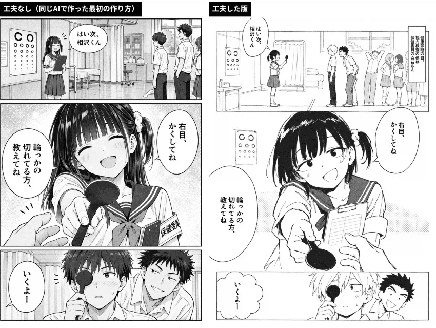
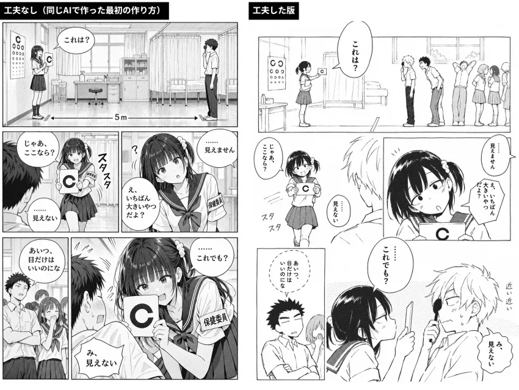
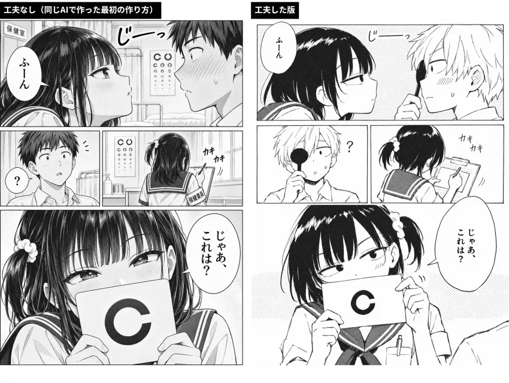
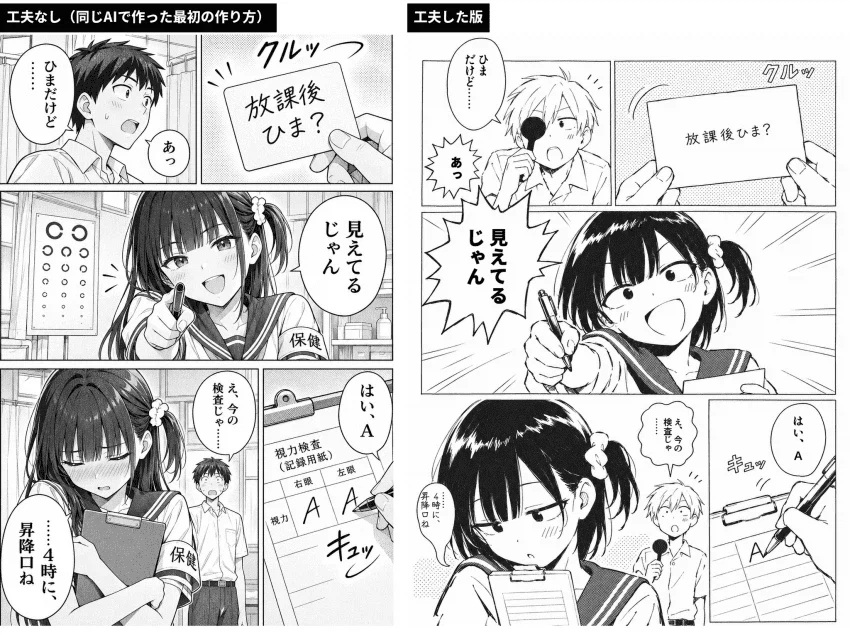

우선 너무 세밀한 AI의 특징을 작화 수정해줄뿐 아니라,
미세한 구도 크롭변경 / 배경생략 등
실제 만화의 표현문법을 입력했다고 함.
양쪽모두 수작업은 아예없는 100% 생성물




우선 너무 세밀한 AI의 특징을 작화 수정해줄뿐 아니라,
미세한 구도 크롭변경 / 배경생략 등
실제 만화의 표현문법을 입력했다고 함.
양쪽모두 수작업은 아예없는 100% 생성물
오른쪽 여캐가 별로긴 한데 ai스러움이 많이 사라지긴하네
-이제 스토리의 시대인가
그것도 딸깍이자낰ㅋㅋㅋㅋㅋ
오른쪽은 목뼈 부러졌냐?
샤프트꺾기되시게따
오른쪽이 확실히 더 꼴리네
와 둘다 AI 였다고? 난 오른쪽 사람 왼쪽 AI인줄알았는데 ㄷㄷ